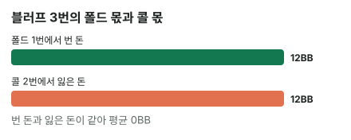
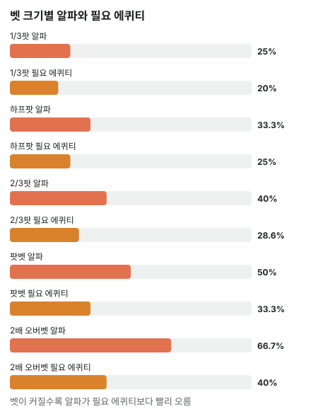

안녕하세요. 상급 첫 글이에요. 지금까지는 거의 늘 콜하는 쪽에 앉아 "몇 % 이겨야 본전인가"(필요 에퀴티)를 계산했죠.
오늘은 자리를 바꿔 벳하는 쪽에 앉아요. 쇼다운하면 지는 핸드로 벳을 걸었을 때, 상대가 몇 번 접어 줘야 이 벳이 남는 장사일까요? 이 질문의 답에 붙은 이름이 알파예요.
이 글에서 배울 것
- 알파 공식 벳 ÷ (팟 + 벳)이 왜 그렇게 생겼는지, 블러프를 몇 번 반복해 보며 직접 따져 보기
- 같은 벳을 놓고 알파(블러프하는 쪽)와 필요 에퀴티(콜하는 쪽)가 왜 다른 숫자인지
- 블러프 결정을 "될까?"가 아니라 "이 상대가 알파보다 자주 접을까?"라는 질문으로 바꾸는 법
오늘의 장면
리버까지 왔어요. 보드는 K♠ 9♠ 4♥ 7♦ 2♣, Hero는 6♠5♠예요.
플랍에서는 스페이드 플러시 드로우였고, 턴 7♦로 4-5-6-7 양방 스트레이트 드로우까지 생겼는데, 리버 2♣로 둘 다 빗나갔어요. 다섯 장으로는 K-9-7-6-5, 보드의 K 하이에 6·5를 붙인 것뿐이라 상대가 벳에 콜할 만한 핸드에는 다 져요.
팟은 12BB. 상대가 체크했어요. Hero는 여기서 6BB(하프팟)를 걸까 고민해요.
오늘은 두 가지를 가정해요. ① Hero는 콜을 받으면 항상 지고, 체크해도 쇼다운에서 진다. ② 상대는 콜 아니면 폴드만 한다(레이즈는 없다).
1단계. 블러프의 손익은 두 가지뿐
블러프란
블러프 = 콜을 받으면 지는 핸드로 상대를 접게 하려는 벳이에요. 오늘 6♠5♠가 딱 그 핸드죠.
오늘 가정에서 블러프의 결과는 둘 중 하나예요.
- 상대가 폴드하면 → 지금 팟 12BB를 가져와요
- 상대가 콜하면 → Hero가 건 6BB를 잃어요
콜을 받으면 팟도 못 가져오고 벳만 날리는 거예요. 그래서 블러프는 "팟을 노리고 벳을 거는 내기"라고 볼 수 있어요.
알파란
알파 = 블러프가 본전이 되려면 상대가 폴드해야 하는 최소 비율이에요. 상대가 이것보다 자주 접으면 블러프가 남고, 덜 접으면 손해예요.
비유하면 자판기 뽑기예요. 한 번 누를 때마다 동전(벳)이 들어가고, 가끔 상품(팟)이 떨어져요. 상품이 비싸고 동전이 쌀수록 덜 자주 떨어져도 남는 장사죠. 알파는 "몇 번에 한 번은 떨어져야 본전인가"예요.
2단계. 세 번 블러프해 보면 보여요
공식부터 외우지 말고, 오늘 장면을 직접 반복해 볼게요. 같은 리버에서 Hero가 6BB 블러프를 3번 했고, 상대가 그중 1번만 접었다고 해요.
- 폴드 1번: 팟 12BB를 가져와요
- 콜 2번: 한 번에 6BB씩, 6 × 2 = 12BB를 잃어요
얻은 돈과 잃은 돈이 똑같아요. 딱 본전이에요. 그래서 이 블러프의 알파는 3번 중 1번, 33.3%예요.
식으로 쓰면 이래요.
블러프 평균 손익 = (1/3) × 12 − (2/3) × 6 = 4 − 4 = 0BB
앞쪽 4는 "폴드 받을 때 얻는 돈 × 폴드 확률", 뒤쪽 4는 "콜 받을 때 잃는 돈 × 콜 확률"이에요. 두 몫이 같아지는 폴드 확률이 바로 알파예요.

이게 무슨 뜻이냐면
6BB를 걸어서 12BB를 노리니까, 한 번 잃는 돈이 한 번 얻는 돈의 절반이에요. 그러면 1번 얻는 동안 2번 잃어도 본전이 맞아요.
그래서 3번 중 1번(폴드 1 : 콜 2)이 기준선이 되는 거예요.
3단계. 공식은 이걸 한 줄로 줄인 것
알파 = 벳 ÷ (팟 + 벳) (팟은 Hero가 벳하기 전 팟)
오늘 숫자를 넣으면 6(벳) ÷ (12(벳 전 팟) + 6(벳)) = 6 ÷ 18 = 33.3%예요. 2단계에서 센 "3번 중 1번"과 같죠.
왜 분모가 "팟 + 벳"일까
말로 풀면 알파 = 잃을 돈 ÷ (잃을 돈 + 얻을 돈)이에요.
- 잃을 돈 = 콜 받을 때 날리는 벳 6BB
- 얻을 돈 = 폴드 받을 때 가져오는 팟 12BB
2단계를 다시 보면, 본전이 되려면 "폴드 횟수 × 12 = 콜 횟수 × 6"이어야 했어요. 폴드 1번에 콜 2번이니까, 전체 3번(= 6 + 12를 6으로 나눈 것) 중 1번이 폴드예요. 잃을 돈과 얻을 돈을 더한 것이 분모가 되는 이유가 이거예요.
같은 걸 "몇 대 1"로도 말해요
Hero는 6BB를 걸고 12BB를 노려요. 12 ÷ 6 = 2, 즉 2 대 1을 받는 내기예요.
2 대 1이면 "2번 지고 1번 이겨도 본전". 그래서 2 + 1 = 3번 중 1번이 폴드면 되는 거죠. %로 말하든 "몇 대 1"로 말하든 같은 이야기예요.
팟이 얼마든, 하프팟이면 33.3%
팟을 1이라고 놓아 볼게요. 하프팟 벳은 0.5예요. 그러면 알파는 0.5 ÷ (1 + 0.5) = 33.3%.
팟이 12BB든 그 몇 배든, 벳 크기를 팟 대비로만 알면 알파가 정해져요. 실전에서는 "하프팟이네? 3번 중 1번 접으면 본전" 하고 바로 떠오르면 돼요.
4단계. 벳 크기별 알파 (팟 12BB 기준)
같은 팟 12BB에서 벳 크기만 바꿔 볼게요.
| 벳 크기 | 벳 | 알파 (블러프하는 쪽) | 필요 에퀴티 (콜하는 쪽) |
|---|---|---|---|
| 1/3팟 | 4BB | 25% | 20% |
| 하프팟 | 6BB | 33.3% | 25% |
| 2/3팟 | 8BB | 40% | 28.6% |
| 팟벳 | 12BB | 50% | 33.3% |
| 2배 오버벳 | 24BB | 66.7% | 40% |

표에서 볼 것 두 가지
첫째, 벳이 커질수록 알파가 올라가요. 크게 걸수록 더 자주 접어 줘야 본전이에요. 팟벳이면 2번 중 1번은 접어야 하죠.
둘째, 같은 벳인데 알파와 필요 에퀴티가 달라요. 하프팟이면 블러프하는 쪽은 33.3%, 콜하는 쪽은 25%예요. 오른쪽 칸은 B15에서 본 그 표예요.
왜 두 숫자가 다를까
둘 다 "잃을 돈 ÷ (잃을 돈 + 얻을 돈)"인데, 얻을 돈이 달라요.
- 블러프하는 쪽: 폴드를 받으면 지금 팟 12BB만 가져와요. 상대 돈은 하나도 안 들어왔으니까요. → 6 ÷ (6 + 12) = 33.3%
- 콜하는 쪽: 이기면 지금 팟 12BB + 상대 벳 6BB = 18BB를 가져와요. → 6 ÷ (6 + 18) = 25%
콜하는 쪽은 상대가 걸어 놓은 돈까지 노리니까 얻을 돈이 커서, 덜 이겨도 본전이에요. 분모로 보면 알파는 팟 + 벳, 필요 에퀴티는 팟 + 벳 × 2(콜까지 들어간 팟)예요.
5단계. 실제로 이득인지 돈으로 확인
알파는 본전선이에요. 상대가 실제로 몇 % 접느냐에 따라 블러프가 남는지 손해인지가 갈려요. EV(같은 행동을 여러 번 했을 때 한 번 평균 손익, B24에서 배웠죠)로 확인해 볼게요.
상대가 40% 접는다면
EV = 0.4 × 12 − 0.6 × 6 = 4.8 − 3.6 = +1.2BB
5번 블러프하면 2번 폴드 받아 24BB를 얻고, 3번 콜 받아 18BB를 잃어요. 합계 +6BB, 한 번 평균 1.2BB예요. 40%가 알파 33.3%보다 크니까 남아요.
상대가 25%만 접는다면
EV = 0.25 × 12 − 0.75 × 6 = 3 − 4.5 = −1.5BB
4번 블러프하면 1번 폴드로 12BB를 얻고, 3번 콜로 18BB를 잃어요. 합계 −6BB예요. 25%는 알파보다 작으니 손해예요.
한 줄로
상대 폴드율 > 알파 → 블러프 이득, 상대 폴드율 < 알파 → 블러프 손해. EV를 매번 계산하지 않아도, 이 비교 하나로 방향이 정해져요.
왜 그럴까: 알파는 "내 핸드"가 아니라 "벳 크기"가 정해요
핸드 이야기가 하나도 없어요
알파 공식에는 벳과 팟만 있어요. 6♠5♠든 다른 빗나간 핸드든, 쇼다운에서 못 이기는 핸드라면 알파는 같아요. 오늘 가정에서 Hero 핸드가 하는 일은 "콜 받으면 진다"는 것 하나뿐이니까요.
그래서 블러프 결정은 숫자 두 개로 쪼개져요.
- 알파: Hero의 벳 크기가 정해요
- 실제 폴드율: 상대가 정해요(상대 핸드, 상대 성향, 앞 스트리트에서 Hero가 보여 준 이야기)
알파는 끝까지 차지 않아요
벳을 아무리 키워도 분모에 팟이 남아 있어서, 알파는 커지기만 할 뿐 "무조건 접어야 하는" 수준까지는 가지 않아요. 2배 오버벳도 66.7%, 3번 중 2번이에요.
반대로 벳을 줄이면 알파도 줄지만, 상대가 작은 벳에는 덜 접을 수 있어요. 그래서 "작게 블러프하면 무조건 유리"도 아니에요. 결국 벳 크기를 바꿀 때마다 '그 크기에서 상대가 얼마나 접을까'를 다시 물어야 해요.
핸드는 알파 대신 폴드율을 바꿀 수 있어요
가정 밖으로 한 발 나가면, Hero 핸드가 실제 폴드율 쪽에는 영향을 줄 수 있어요. 예를 들어 Hero가 6♠·5♠를 들고 있으면, 상대가 같은 스페이드 드로우로 빗나갔을 조합이 그만큼 줄어요. 빗나간 드로우는 벳에 접을 핸드라서, 이건 상대 폴드율을 조금 낮추는 쪽이에요. 이렇게 내 카드가 상대 조합을 지우는 효과(블로커)는 고급 E01에서 다뤄요.
이게 무슨 뜻이냐면
블러프는 "핸드가 약하니까 한번 해 볼까"가 아니라 "이 벳 크기의 본전선을 이 상대가 넘을까"에 거는 결정이에요. 핸드는 그 결정에 들어갈 자격(쇼다운에서 못 이김)만 정해요.
자주 하는 실수
실수 1. 알파와 필요 에퀴티를 같은 숫자로 쓰기 "하프팟이면 25%"를 블러프에도 그대로 쓰는 실수예요. 오늘 하프팟 블러프의 본전선은 33.3%였어요. 25%만 접는 상대에게 블러프하면 한 번에 1.5BB씩 잃어요. 블러프할 때는 분모에 벳을 한 번만 넣어요.
실수 2. "크게 걸면 더 잘 접으니까 크게" 크게 걸면 상대가 더 접을 수는 있어요. 그런데 본전선도 같이 올라가요. 하프팟이면 33.3%였던 기준이 팟벳이면 50%가 돼요. 벳을 키울 때는 "폴드가 그만큼 더 늘어날까"를 같이 물어요.
실수 3. 쇼다운에서 이길 수 있는 핸드에 알파를 그대로 쓰기 알파는 "체크하면 쇼다운에서 진다"는 가정 위에서 블러프를 0과 비교한 숫자예요. 오늘 6♠5♠는 체크해도 지니까 맞아요. 하지만 체크하면 상대의 더 약한 핸드를 이길 수 있는 핸드라면, 체크에도 이득이 있어서 블러프를 0이 아니라 체크와 비교해야 해요.
"그럼 상대가 몇 % 접는지는 어떻게 알아요?"
좋은 질문이에요. 정확히는 알 수 없어요. 그래서 알파는 질문을 바꿔 주는 도구예요.
"블러프해도 될까?"는 답하기 어렵지만, "이 상대가 이 하프팟에 3번 중 1번 이상 접을까?"는 생각해 볼 수 있어요. 상대 레인지에 이 보드에서 접을 핸드가 얼마나 있는지, 이 상대가 리버 벳에 얼마나 콜하는 편인지를 떠올리면 되죠.
반대로 상대 입장에서 "얼마나 지켜야 Hero 블러프가 남지 않나"를 따지는 숫자(MDF)는 다음 글 A02에서 배워요. c-bet에 알파를 쓰는 법은 A08, 상대가 접는 핸드를 콤보로 세는 법은 A09에서 다뤄요.
선생님의 한마디
블러프를 고민할 때는 이 순서만 기억해요.
- 콜 받으면 지고, 체크해도 지는 핸드인가 먼저 확인
- 벳 크기로 알파를 떠올리기: 하프팟 33.3%, 팟벳 50%
- "이 상대가 이 크기에 알파보다 자주 접을까?" — 그렇다고 볼 이유가 있을 때만 벳
연습 문제
학습툴에는 알파를 직접 넣는 칸이 없어요. 홀덤학습 팟 오즈 퀴즈 Lv.5(블러프 본전)로 같은 계산을 연습해 보세요.
문제 1. 리버 팟 20BB. Hero는 빗나간 드로우로 15BB(3/4팟) 블러프를 생각 중이에요. 이 상대는 이 상황에서 40% 정도 접는다고 봐요. 블러프할까요?
정답 보기
블러프하지 않아요. 알파 = 15 ÷ (20 + 15) = 15 ÷ 35 = 42.9%. 상대 폴드율 40%가 본전선보다 낮아요. EV = 0.4 × 20 − 0.6 × 15 = 8 − 9 = −1BB. 5번 하면 2번 폴드로 40BB, 3번 콜로 45BB를 잃어 −5BB예요. 40%면 하프팟 블러프에는 충분했을 폴드율인데, 벳이 커지자 본전선이 그 위로 올라간 거예요.
문제 2. 리버 팟 18BB. 이 상대는 이 리버에서 25% 정도 접는다고 봐요(벳 크기와 상관없이 같다고 할게요). Hero가 블러프로 손해를 보지 않으려면 벳을 최대 얼마까지 걸 수 있을까요? 9BB(하프팟)를 걸면 어떻게 될까요?
정답 보기
알파가 상대 폴드율 25%와 같아지는 벳이 최대예요. 알파 = 벳 ÷ (18 + 벳)이 4분의 1이 되려면, 벳이 팟의 3분의 1이어야 해요(벳 1 : 팟 3이면 1 ÷ (3 + 1)이니까요). 확인: 6 ÷ (18 + 6) = 25%. 그래서 최대 6BB, 1/3팟이에요. 9BB면 알파 = 9 ÷ (18 + 9) = 33.3% > 25%라 손해예요. 상대가 덜 접을수록 블러프로 걸 수 있는 크기의 상한이 내려가요.
핵심 정리
- 알파 = 벳 ÷ (팟 + 벳) = 잃을 돈 ÷ (잃을 돈 + 얻을 돈). 블러프가 본전이 되는 최소 폴드율이에요
- 알파는 벳 크기(팟 대비)만으로 정해져요. 하프팟 33.3%, 팟벳 50%, 2배 오버벳 66.7%
- 같은 벳이라도 알파 > 필요 에퀴티. 블러프는 폴드로 지금 팟만 얻고, 콜은 상대 벳까지 얻기 때문이에요
- 상대 폴드율이 알파보다 크면 블러프 이득, 작으면 손해
- 알파는 콜 받으면 지고 체크해도 지는 핸드에 쓰는 기준이에요
정리하며
오늘은 리버에서 빗나간 6♠5♠로 하프팟 블러프를 고민했어요.
블러프 3번 중 1번만 폴드 받아도 12BB를 얻고 12BB를 잃어 본전이라는 걸 직접 세 보고, 그게 알파 공식 벳 ÷ (팟 + 벳)이라는 걸 확인했죠. 같은 하프팟이어도 콜하는 쪽 기준(25%)과 블러프하는 쪽 기준(33.3%)이 다른 이유는 얻을 돈이 다르기 때문이었어요.
실전에서 가져갈 건 하나예요. 블러프 전에 "이 크기에서 본전선이 몇 %지? 이 상대가 그보다 자주 접을까?"를 물으세요.
다음 글 A02에서는 같은 벳을 반대편 의자에서 봐요. 상대가 블러프로 벳할 때, 우리가 얼마나 지켜야 그 블러프가 남지 않는지를 다뤄요.
AI 작성 · 숫자는 계산 검증 · 블러프는 콜을 받으면 항상 진다고 가정(상대 레이즈 없음)